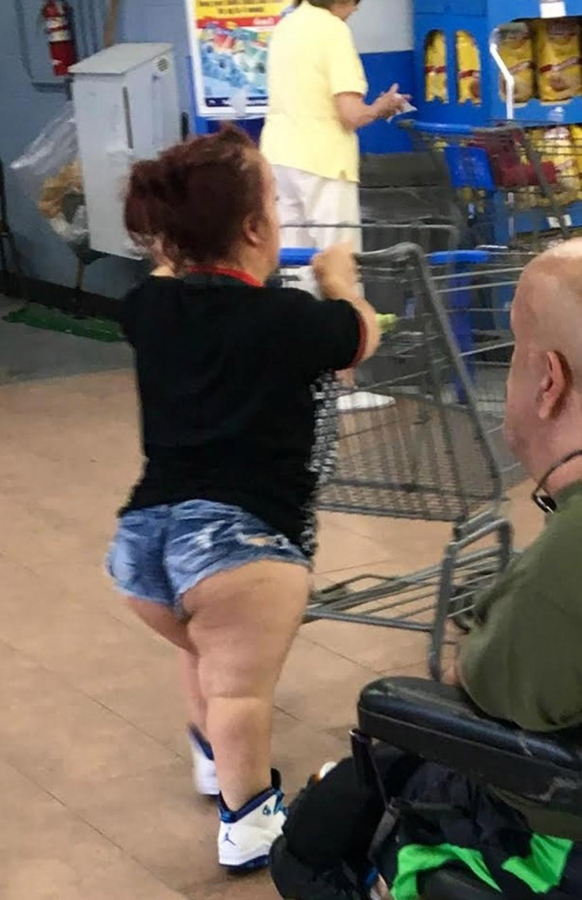
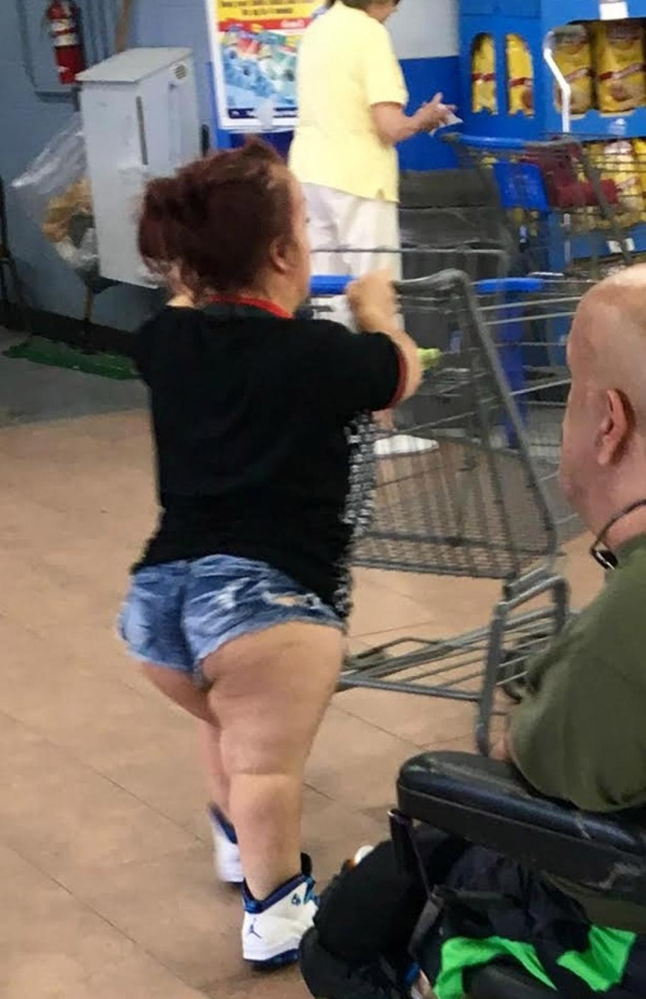

Cadastre de l'Emploi Non Marchand - Cadastre de l'emploi non marchand
2021.04.13 12:45
Aller au contenu principal Toggle navigation Menu
Cadastre de l emploi non marchand
Application SICE Collectes des données pour le cadastre de l emploi Calendrier des collectes Guide de l utilisateur et instructions générales Problème d affichage de l application sur votre écran ? Didacticiels d aide à l encodage SICE (téléchargeables) Foire Aux Questions Questions générales relatives à l encodage dans SICE quelle que soit la collecte Questions relatives à la collecte statistique (1er semestre de l année) Questions relatives à la collecte de justification des subventions (2nd semestre de l année) Documentation, contacts et liens utiles Documentation légale relative au cadastre de l emploi non marchand Qu est ce que le cadastre de l emploi ? Quelques définitions Quelques chiffres sur l emploi dans le secteur non marchand Liens utiles et contacts Liens utiles Contacter la DENM - Helpdesk Contacter les agents qui gèrent votre dossierCadastre de l Emploi Non Marchand
Ce site est à destination des employeurs du non marchand en FWB (hors enseignement)
Ce site est à destination des employeurs du non marchand en FWB (hors enseignement)
En cette période particulière de confinement, toute l’équipe de la DENM pense à vous et à vos proches. Pensez aux autres, restez chez vous et surtout prenez soin de vous. Courage à toutes et à tous.
Contactez-nous
Cadastre de l emploi non marchand
Boulevard Léopold II, 44
1080 Bruxelles
02/413.34.96
cadastre.emploi(at)cfwb.be
Déclaration d accessibilité
Vie privée Une question ? 0800 20 000
Appel gratuit les jours ouvrables de 8h à 18h Les sites de la Fédération sont réalisés avec le support de l' ETNIC
- Recettes de cocktails et boissons
- Cadastre de l'Emploi Non Marchand - Cadastre de l'emploi ...
- Blédina : Repas et recettes pour l'alimentation de votre bébé
- Recettes de cuisine | 750g
- Machines à Café Inissia | Nespresso
- Gateau : nos délicieuses recettes de gateau
- Recettes : les meilleures recettes de cuisine - recette ...
- Cookpad - Que la cuisine rime avec plaisir!
- Cuisinez avec Campbells - De délicieuses recettes faciles ...
- Clea cuisine | recettes bio et veggie pour tous
- Recettes de cocktails et boissons
recettes bio et veggie pour tous ! #à la Une. Sando : les sandwichs japonais. sandwichs 9 avril 2021. Cette semaine, mon cerveau a refusé de se remettre dans la configuration télétravail + travail scolaire + enfant à la maison du printemps dernier. A la place, on a décidé de se lancer dans une semaine à thème : les sandoichi, autrement ...
- Cadastre de l'Emploi Non Marchand - Cadastre de l'emploi ...
Vous cherchez des recettes pour quiche ? Les Foodies vous présente 1295 recettes avec photos à découvrir au plus vite !
- Blédina : Repas et recettes pour l'alimentation de votre bébé
Besoin d'inspiration en cuisine ? 750g vous propose des idées pour une cuisine quotidienne pratique, créative, savoureuse et adaptée à vos exigences.
- Recettes de cuisine | 750g
Découvrez la Gamme de Machines à Café Inissia par Nespresso, la plus petite et colorée des Machines Nespresso avec toujours ce goût exceptionnel de café.
- Machines à Café Inissia | Nespresso
Je peux stocker et organiser mes recettes, mes commentaires, créer des menus, etc. Aller sur mon carnet. Nouveautés. Anniversaire d'enfant : notre sélection pour une belle table de fête Notre sélection des meilleures cuisinières pour enfants. Suivez-nous. Suivez-nous sur les réseaux sociaux !
- Gateau : nos délicieuses recettes de gateau
Soif de recettes ? On se donne rendez-vous dans votre boîte mail ! Découvrir nos newsletters. Retrouvez Marmiton où que vous soyez en téléchargeant l'application. Concocté avec ♥ par Marmiton. Tous droits réservés Marmiton.org - 1999-2021.
- Recettes : les meilleures recettes de cuisine - recette ...
Rejoignez notre communauté de cuisiniers amateurs et partagez vous aussi vos recettes de tous les jours !
- Cookpad - Que la cuisine rime avec plaisir!
Voir les recettes . Whisky (bour... 293 recettes Voir les recettes . Negroni. 2.6 / 5. sur 1239 avis . Planter's Punch. 3 / 5. sur 1238 avis . Marquisette. 3 / 5. sur 1230 avis . Spritz dolce. 2.8 / 5. sur 1128 avis . Les recettes de #COCKTAILS les plus populaires Tequila Sunrise. B-52. Daiquiri ...
- Cuisinez avec Campbells - De délicieuses recettes faciles ...
En cette période particulière de confinement, toute l’équipe de la DENM pense à vous et à vos proches. Pensez aux autres, restez chez vous et surtout prenez soin de vous.
- Clea cuisine | recettes bio et veggie pour tous
Bouillon Concentré Recettes. Trouvez votre idéal de saveur avec le bouillon concentré Campbell’s! Nos bouillons concentrés sont jusqu’à quatre fois plus concentrés que nos bouillons prêts à utiliser.
recettes bio et veggie pour tous ! #à la Une. Sando : les sandwichs japonais. sandwichs 9 avril 2021. Cette semaine, mon cerveau a refusé de se remettre dans la configuration télétravail + travail scolaire + enfant à la maison du printemps dernier. A la place, on a décidé de se lancer dans une semaine à thème : les sandoichi, autrement ...
Vous cherchez des recettes pour quiche ? Les Foodies vous présente 1295 recettes avec photos à découvrir au plus vite !
Besoin d'inspiration en cuisine ? 750g vous propose des idées pour une cuisine quotidienne pratique, créative, savoureuse et adaptée à vos exigences.
Découvrez la Gamme de Machines à Café Inissia par Nespresso, la plus petite et colorée des Machines Nespresso avec toujours ce goût exceptionnel de café.
Je peux stocker et organiser mes recettes, mes commentaires, créer des menus, etc. Aller sur mon carnet. Nouveautés. Anniversaire d'enfant : notre sélection pour une belle table de fête Notre sélection des meilleures cuisinières pour enfants. Suivez-nous. Suivez-nous sur les réseaux sociaux !
Soif de recettes ? On se donne rendez-vous dans votre boîte mail ! Découvrir nos newsletters. Retrouvez Marmiton où que vous soyez en téléchargeant l'application. Concocté avec ♥ par Marmiton. Tous droits réservés Marmiton.org - 1999-2021.
Rejoignez notre communauté de cuisiniers amateurs et partagez vous aussi vos recettes de tous les jours !
Voir les recettes . Whisky (bour... 293 recettes Voir les recettes . Negroni. 2.6 / 5. sur 1239 avis . Planter's Punch. 3 / 5. sur 1238 avis . Marquisette. 3 / 5. sur 1230 avis . Spritz dolce. 2.8 / 5. sur 1128 avis . Les recettes de #COCKTAILS les plus populaires Tequila Sunrise. B-52. Daiquiri ...
En cette période particulière de confinement, toute l’équipe de la DENM pense à vous et à vos proches. Pensez aux autres, restez chez vous et surtout prenez soin de vous.
Bouillon Concentré Recettes. Trouvez votre idéal de saveur avec le bouillon concentré Campbell’s! Nos bouillons concentrés sont jusqu’à quatre fois plus concentrés que nos bouillons prêts à utiliser.
 
